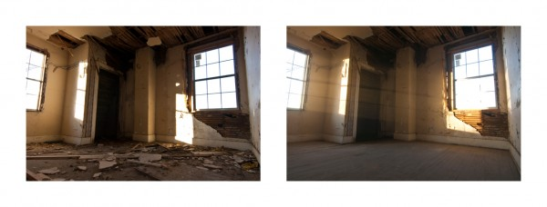

-
Selection No. 9
by Alix Lambert February 19, 2013
1. The documentary Five Broken Cameras is one of the best films I have seen in recent memory. Nominated for an Oscar, the film is co-directed by Emad Burnat, a Palestinian man who captured the opposition to Israeli settlers by residents of his West Bank village, Bil’in. Israeli peace activists also joined the resistance. The film is brilliantly structured around the acquisition and subsequent destruction of the five cameras that Burnat used to document all that was happening. His initial camera was purchased to capture the birth of his son. We watch the first five years of his son’s life while also seeing Burnat risk his own life, lose his friends, and replace his cameras as they are shot and destroyed. This documentary has my vote.
Gene Wilder as Wonka. courtesy of Letters of Note.
2. Arguably the best entrance of a character in the history of cinema is Gene Wilder’s portrayal of Willy Wonka in Willy Wonka and the Chocolate Factory. The entrance, complete with limp, cane, somersault and surprise recovery, were entirely his idea – as illustrated in this letter. He wanted to introduce Wonka this way so that for the rest of the film the viewer would never know if he was telling the truth or not. The rest of the letter addresses specific details of his costume, including the suggestion to shorten his top hat by two inches. His investment in this sort of detail along with his deadpan delivery… “wait, stop, come back.” join together to make Wilder’s Willy Wonka a classic.
Newkirk’s Long Division (v.1) (detail), 2012. courtesy of Blum and Poe, Los Angeles.
3. Born in the Bronx and currently based in Los Angeles, the artist Kori Newkirk creates works using a combination of images and objects in a lyrical way to address race, family, gender and politics. For his piece: Long Division (2012) he cuts pictures of crime scenes out of the newspaper every time he sees one. He collects them and pins them to the wall connecting each image to the next by way of the yellow crime scene tape that runs through frame. The delicate, fluttering portrait of crime marking both time and place, that emerges, is striking. The piece is drawing, photography, performance, and ephemera all in one.
image from Rogers’ A Method of Inquiry, courtesy of the artist.
4. Jonathan Loïc Rogers, a photographer born and raised in Memphis, Tennessee, finds inspiration in the abandoned and condemned buildings of the area. Many artists have an attraction to ‘ruin porn’ — but that’s not what this work is, nor does that interest Rogers. In his series A Method of Inquiry, Rogers photographed fifteen places, then cleaned them — in one case spending 3 months to get the empty theater dirtless to his satisfaction — then re-photographs the space. All that frenetic energy is for the image only, the spaces will not be saved and the debris that is just out of frame will soon overtake the buildings again. There is beauty in both the action and the resulting image.
Charles Kaufman. courtesy of Interview Magazine.
5. The 70-minute BAFTA speech Charlie Kaufman gave on being an artist is one of the best, raw, real descriptions of the struggle and importance of artistic expression and staying true to one’s own voice that I have heard.
I do believe you have a wound too. I do believe it is both specific to you and common to everyone. I do believe it is the thing about you that must be hidden and protected, it is the thing that must be tap danced over five shows a day, it is the thing that won’t be interesting to other people if revealed. It is the thing that makes you weak and pathetic. It is the thing that truly, truly, truly makes loving you impossible. It is your secret, even from yourself. But it is the thing that wants to live.
Listen to the whole speech.
Levine’s Poses. courtesy of Kelly Cove Press.
6. To go to a life drawing class and decide to write poems rather than make drawings is in-and-of-itself brilliant. The resulting poems, accompanied by Richard Diebenkorn’s drawings in Genine Lentine‘s new book Poses: An Essay Drawn from the Model– attest to the ingenious idea. As gestural with her words as Diebenkorn is in his drawings, we sense the artist’s model and the artist in their awkwardness and grace. This collection of poems is part of Lentine’s gentle curiosity about everything.
For her project, she conducts a series of podcast interviews that take place while both interviewee and interviewer (Lentine) are lying on a mattress. From this relaxed position a conversation about discomfort begins– and goes where it will.
7. Earlier this year I went to a fundraiser for young dancers — Kumble Theater’s Stars of New York Dance, or what I like to call: Dancing With Your State Legislature. Modeled after Dancing With the Stars, state senators and other local politicians agreed to learn and perform a routine with the guidance and partnership of a professional. The night couldn’t have been more fun, the politicians couldn’t have been more game, and the cause couldn’t have been a better one.
Pussy Riot. courtesy of n+1.
8. The Moscow based artist group Pussy Riot garnered worldwide attention when they were arrested for performing at the Cathedral of Christ the Savior. Their music video: “Punk Prayer – Mother of God, Chase Putin Away!” aimed to criticize the church’s support of Putin. Three of the group members, Nadezhda Tolokonnikova, Maria Alyokhina, and Yekaterina Samutsevitch, were convicted and sentenced. Two of the three were sent to prison camps.
Excerpted from Yekaterina Samutsevitch’s closing statement:
Perhaps the unpleasant, far-reaching effect of our media intrusion into the cathedral was a surprise to the authorities themselves. At first, they tried to present our performance as a prank pulled by heartless, militant atheists. This was a serious blunder on their part, because by then we were already known as an anti-Putin feminist punk band that carried out its media assaults on the country’s major political symbols.
In the end, considering all the irreversible political and symbolic losses caused by our innocent creativity, the authorities decided to protect the public from us and our nonconformist thinking. Thus ended our complicated punk adventure in the Cathedral of Christ the Savior.
It is worth reading the entire statement.
9. Los Angeles based poet, Scott Wannberg, died last summer. Wannberg worked at Dutton’s bookstore in Brentwood and frequently got around Los Angeles by bus. He eventually moved to Oregon in 2008 as his health deteriorated. Influenced by the beats Wannberg was one of the founders of the Carma Bums. His humor and generosity in turn touched so many other writers. Here is one of his poems, THE ONGOING STORY:
Dancers of a music
softly sculpting nouns of
seeing
weaving ceremonial rugs of
empathy
America’s complicated biography
always unraveling
in rich sentences of
the heart
History, a confusing series of streets
in a dimly lit end of the world
made accessible
by his sweet singing
in a voice that cultivated the young American
earth and helped
teach it how to
dream
She painted the stories between the
stories
Together they invented
a rhythm
that flows clear
to the source of
our tired bones
and allows us to
believe
For Page and Eloise
dancing on the opening
sentence structure
of being
May your energy
keep us all
alive
The KVB. courtesy of Alix Lambert.
10. I was initially introduced to the music of the British band The KVB when I was asked to direct an episode of Room 205, which features them. The band consists of Klaus Von Barrel and his girlfriend Kat Day. Their hypnotic sound — a marriage of Von Barrel’s vocals and lo-fi synthesizers is well matched to their lack of movement or affect when they perform. Kat, who is also a visual artist, has created a number of videos for the band. Room 205 Episode forthcoming, stay tuned.